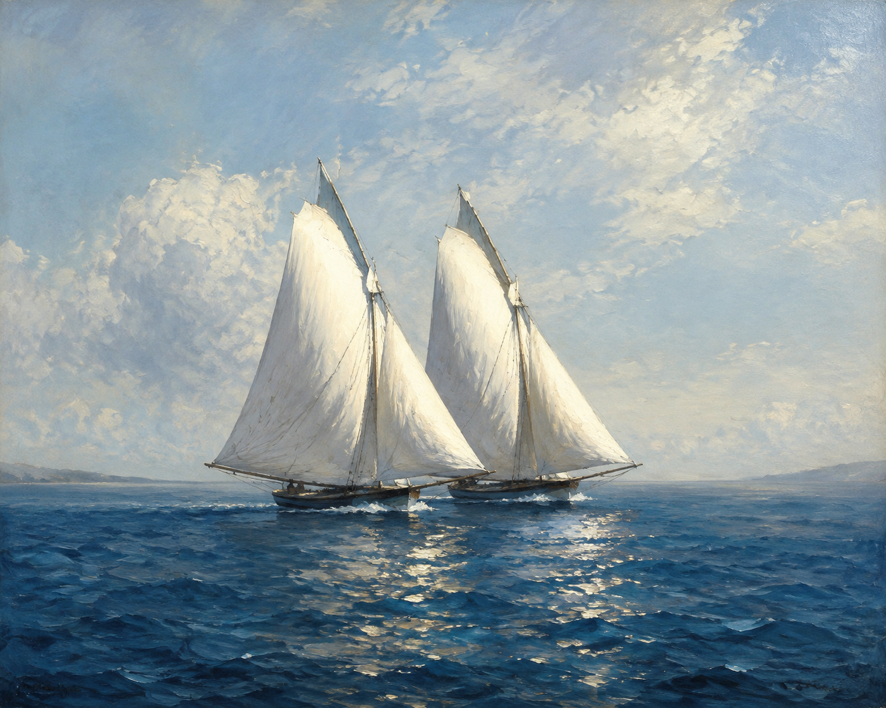

Zwei Segel erhellend / Die tiefblaue Bucht!
全诗第一节几乎是一个无定动词的名词句（verbloser Satz）：erhellend（照亮）是现在分词，不是变位动词，整节没有主谓结构，靠名词与分词悬浮成句。两片帆照亮深蓝海湾——帆被写成了发光体。
两片帆
《Gedichte》（1882）· 极短物诗（Dinggedicht）
诗意现实主义 · Poetischer Realismus
1882年定稿；收入《Gedichte》（H. Haessel, Leipzig 1882, S.150）

图片由 AI 生成
Zwei Segel erhellend / Die tiefblaue Bucht!
全诗第一节几乎是一个无定动词的名词句（verbloser Satz）：erhellend（照亮）是现在分词，不是变位动词，整节没有主谓结构，靠名词与分词悬浮成句。两片帆照亮深蓝海湾——帆被写成了发光体。
Zwei Segel sich schwellend / Zu ruhiger Flucht!
sich schwellen（鼓胀，反身，弱/强两可）→ sich schwellend（现在分词）。die Flucht（逃逸、航行）在此非"逃跑"的贬义，而是"远航"的诗意说法。两片帆"驶向宁静的逃逸"。
Wie eins in den Winden / Sich wölbt und bewegt, / Wird auch das Empfinden / Des andern erregt.
第二节才出现变位动词（wölbt, bewegt, wird erregt）。核心比喻：两片帆像两个有感受的人，一片动，另一片的"感受"（das Empfinden）也被触动。这是"两者相互回应"的结构。
Begehrt eins zu hasten, / Das andre geht schnell,
第三节用三个平行的"若一片……另一片便……"完成两帆的呼应：疾驰/加快、停歇/安息。sein Gesell（它的伙伴）= der Gefährte（古/雅）。两片帆被写成彼此感应的一对。
| Infinitiv | Präsens 3. Sg. |
Präteritum | Perfekt | Partizip II | Konjunktiv II | Hilfsverb |
|---|---|---|---|---|---|---|
| schwellen (sich) | schwillt sich / schwellt sich | schwoll sich / schwellte sich | ist sich geschwollen / hat sich geschwellt | geschwollen / geschwellt | schwölle sich / schwellte sich | sein |
| ↳ 强变化（不及物，i-a-o：schwillt/schwoll/geschwollen，反身"鼓胀"）与弱变化（及物/使役 schwällen/schwellen"使膨胀"）两读。诗中 sich schwellend（帆鼓胀）取强变化不及物反身义。注意与《城市之神》（编号37）schwallen（schwällt，弱变化使役）区分。 | ||||||
| begehren | begehrt | begehrte | hat begehrt | begehrt | begehrte | haben |
| ↳ 弱变化；诗中 Begehrt eins zu hasten（第9行）。与《手套》（编号35）同 lemma。 | ||||||
Zwei Segel erhellend / Die tiefblaue Bucht! / Zwei Segel sich schwellend / Zu ruhiger Flucht!（第1—4行）
全诗 3 节 × 4 行（共12行），交叉韵 abab 贯穿
康拉德·费迪南德·迈耶（1825—1898）是瑞士德语诗人，诗意现实主义的代表。他以历史叙事诗（如《Huttens letzte Tage》）与极短抒情诗（物诗）闻名。
《两片帆》1882年定稿，收入其《诗集》（Haessel, Leipzig 1882, S.150）。全诗12行，写两片同行的帆如何彼此感应——一片动，另一片随之；一片急，另一片加快。这是迈耶物诗的典型：从凝视一个具体之物（两片帆）读出一种普遍的关系（两者之间的感应）。读者常把这首诗读作爱情或友情的隐喻，但诗本身始终停留在"两片帆"的字面——这正是物诗的节制。
本诗与本站《罗马的喷泉》（编号26）是迈耶物诗的一对：一首写水的盘间回应，一首写帆的感受感应，结构同源。
中文译文为本站学习译文（AI 辅助），采用直译。说明：(1) 第一节的无定动词名词句（erhellend / sich schwellend 为现在分词）译文以"照亮着/鼓胀着"近似传达其悬浮感；(2) die Flucht 取"远航/逃逸"诗意义，不译"逃跑"；(3) 交叉韵 abab 与几乎无变位动词的风格无法在中文完全复制，译文以整齐的行拍近似。本诗与《罗马的喷泉》（编号26）建议对读。
【三源核对】正文以 German Wikisource 转写的1882年《诗集》（Haessel, Leipzig, S.150）为底本，另以两个独立来源核对：deutschelyrik.de、lyrik.antikoerperchen.de。3 节、行数 4/4/4（共12行）、交叉韵 abab——三源逐字一致，零异文。
【公版】迈耶1898年卒，公版起始年 = 1898 + 71 = 1969。
本诗现满足规则 A（≥3 来源）、B（≥3 独立运营方：wikimedia / deutschelyrik / antikoerperchen）、D（含一级来源：1882印刷本扫描）。无待核实项。